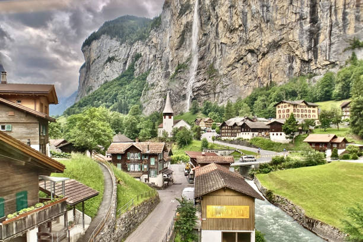

I chose my visual and interactive design color wise with what I thought matched the color palette of Gimmelwald's nature, white, black, blue, green, and gray. The pop of pink in the animation on the buttons was just because I love the color pink, and I thought it matched and was cute. I used the resource provided from class that was showing the best typeface pairings and I thought that Playfair Display and Alice worked really well together and fit the vibe I was going for, for Switzerland as a vacation spot.
Text placement and the photo placement went hand in hand because it felt right to have the photos and texts laid out in a straightforward manner that made it clear what the options were. Gimmelwald is a very small simple place, with not many options for tourists, so I thought my design should match this simplicity. I chose the button placement at the top and the page navigation buttons at the top because that is where I as a website user instinctively go to look for those kinds of options, so I followed that in my design choice. I did struggle with the placement of aligning the two, and it is still not quite how I would want it to look, but I found it quite difficult to place them where I wanted them to be.
The pictures were made to be 50% because they are the focus of the project, Gimmelwald is absolutely stunning, and I wanted to entice possible visitors by capturing their attention with the beauty of the place.
